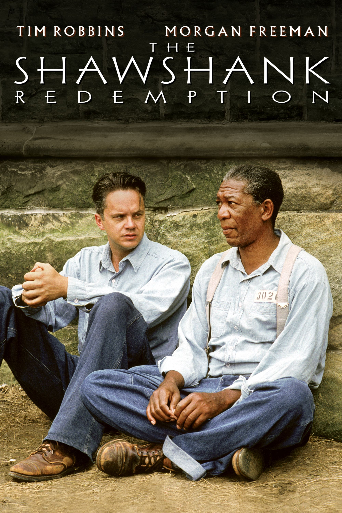

The Shawshank Redemption is my favourite movie because it tells an incredibly moving story of hope,friendship and resilience. The flim beautufully portray the life of a man wrongly imprisoned and his journey through hardship and redemption. The powerful performamce and inspiring message make it a movie I can watch again and again.
Andy Dufresne is sent to Shawshank Prison for the murder of his wife and her secret lover. He is very isolated and lonely at first, but realizes there is something deep inside your body that people can't touch or get to....'HOPE'. Andy becomes friends with prison 'fixer' Red, and Andy epitomizes why it is crucial to have dreams. His spirit and determination lead us into a world full of imagination, one filled with courage and desire. Will Andy ever realize his dreams?
Frank Darabont
Stephen King
Tim Robbins, Clancy Brown, Gil Bellows, Mark Rolston, James Whitemore
Back to TopAndy Dufresne is a successful banker who finds himself in a nightmare when he is wrongly convicted of murdering his wife and her lover. Sent to Shawshank Prison, Andy faces a harsh and unforgiving environment, where he struggles to maintain his hope. Despite the difficult conditions, he forms a deep friendship with Ellis "Red" Redding, a long-term inmate who helps him navigate prison life. As Andy endures the challenges of prison, he uses his skills as a banker to earn the respect of both the inmates and the guards. He creates a library, helps fellow inmates with their education, and even finds a way to assist the corrupt warden in laundering money. Through his intelligence and kindness, Andy brings a sense of hope to his fellow inmates, showing them that life can still have meaning, even behind bars. As the years pass, Andy’s determination never wavers. He dreams of freedom and a life beyond the prison walls. His incredible journey is a testament to the strength of the human spirit and the belief that hope can lead to redemption. Will Andy find a way to escape Shawshank and reclaim his life?
Title: The Shawshank Redemption
Release Date: September 23, 1994
Genre: Drama
Director: Frank Darabont
Writers: Stephen King (short story), Frank Darabont (screenplay)
Stars: Tim Robbins, Morgan Freeman, Bob Gunton, William Sadler
Plot Summary: Two imprisoned men bond over a number of years, finding solace and eventual redemption through acts of common decency.
Budget: $25 million
Opening Weekend: $1.1 million
Gross Worldwide: $58.3 million
Production Companies: Castle Rock Entertainment
Distribution Companies: Columbia Pictures
Runtime: 142 minutes
Aspect Ratio: 1.85 : 1
Sound Mix: Dolby Stereo
Camera: Panavision Cameras and Lenses
Laboratory: Technicolor
United States
English
September 23, 1994
Frank Darabont
Drama
The novella "Rita Hayworth and Shawshank Redemption" by Stephen King
Tim Robbins, Morgan Freeman, Bob Gunton